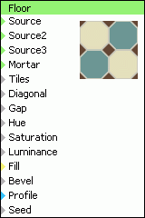

Filtr "Floor" je generátor podlahy s osmihrannımi dla�dicemi.
Source - barva sudıch velkıch dla�dic. Vstup není ohranièen.
Source2 - barva lichıch velkıch dla�dic. Vstup není ohranièen.
Source3 - barva malıch kosoètvercovıch dla�dic. Vstup není ohranièen.
Mortar - barva malty. Vstup není ohranièen.
Tiles - poèet dla�dic v horizontálním a vertikálním smìru. Vstup je ohranièen do rozsahu 0.01..1 a zadává se po krocích 0.01, které pøedstavují 1 a� 100 dla�dic.
Diagonal - velikost malé kosoètvercové dla�dice. Vstup není ohranièen.
Gap - mezera mezi dla�dicemi, neboli tlouš�ka vıplòové malty. Vstup není ohranièen.
Hue - stupeò náhodnosti pøebarvení odstínu dla�dic.
Saturation - stupeò náhodnosti zmìny barevné sytosti dla�dic.
Luminance - stupeò náhodnosti zmìny svìtelnosti dla�dic.
Fill - zpùsob vyplòování obsahu dla�dic. K dispozici je 5 módù vıplnì, urèenıch èíslem 0...0.4 po krocích 0.1.
| mód | název | popis |
|---|---|---|
| 0 | Image | Obraz se do dla�dice pøenese beze zmìny. |
| 1 | Random Image | Dla�dice se vyplní obrazem z náhodného místa. |
| 2 | Solid | Dla�dice se vyplní jednotnou barvou podle barvy v místì støedu dla�dice. |
| 3 | Random Solid | Dla�dice se vyplní jednotnou barvou z náhodného místa v obrazu. |
| 4 | Whole Image | Ka�dá dla�dice se vyplní celım obrazem. |
Bevel - šíøka úkosu hrany. Pøi úkosu pøechází hrana plynule z barvy malty na barvu dla�dice. Vstup není ohranièen.
Profile - vstup prùbìhové køivky urèující prùbìh úkosu hrany. Pro souøadnici X prùbìhové køivky je pou�ita hodnota z úkosu hrany (tj. 0=malta, 1=dla�dice). Hodnota zjištìná z køivky se pou�ije jako stupeò prolnutí barvy dla�dice a malty. Hodnota pro X=0 se pou�ije pro mezeru mezi dla�dicemi a hodnota pro X=1 se pou�ije pro obsah dla�dic, a to i mimo úkos hrany.
Seed - vstup varianty generátoru náhody. Vstup Seed má v rozsahu 0..1 tisíc hodnot s pøírustkem 0.001. Z hodnoty vstupu Seed je odvozen náhodnı obrazec, kterı je tímto vstupem generován jednoznaènì a opakovatelnì. Vstup není ohranièen a mù�e bıt mimo rozsah 0..1, èím� lze vygenerovat více náhodnıch obrazcù ne� 1000.